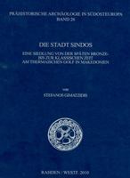

Stefanos Gimatzidis
The City of Sindos: A Settlement of the Late Bronze Age to the Classical Period on Thermaikos Golf in Macedonia
Rahden/Westf: Verlag Marie Leidorf GmbH, 2010
 |
The multi-part settlement hill of Anchialos is situated 23 km west of present-day Thessaloniki in a marshland on the plain Thermaic Gulf and belongs to the largest of its kind in Macedonia. It is being identified with historical Sindos which, until now, was mainly known because of its rich graves, Excavations of the University of Thessaloniki under M. Tiverios (1990-1997, 2000-2002) revealed buildings with mud brick walls with or without a stone foundation, clay or gravel floors, thatched and later tiled roofs. Additionally, there was evidence for terraces and substantial settlement material belonging to 16 phases, mainly pottery, of which 738 vessels were selected for the catalogue and illustrated. The focus is on two handmade and 28 wheel-thrown wares of the Late Bronze and Iron Age. There were also inscriptions on vessels and small finds consisting of pottery, bone, antler, sea shells, glass, stone, bronze, and iron. The book ends with a discussion of the chronological development and comparisons with other settlements to the result that the continuity between the Geometric and the Archaic Period at Sindos is the most distinctive feature. Copies may be ordered by contacting: |
| Back to Publications | Table of Contents |